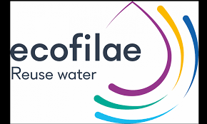

Présentation de l'entreprise
De Marwan youmi
Ecofilae est une petite société privée de Montpellier en France qui a un champ d’action international, elle est constituée de 9 salariés.La société a pour objectif la contribution à amélioration les conditions de vie sans impacter les ressources.L’entreprise a pour activer (Conseil, études, recherches et développement, formation) et comme domaine d’activité (Recherche-développement scientifique).Les utilisateurs sont les usines, les collectivités, les délégataires, les aménageurs, agriculteur, les terrains de golf et espace de loisir.Son Statut juridique est la SAS, société par actions simplifiée, c’est le fait qu’une société commerciale qui ne peut pas faire appel à l'épargne publique.
Durant 9 ans la société na pas cessé d’innover, elle a émergé par Nicolas Condom suit à l’expertise dans le domaine.
En 2010 est née la marque Ecofilae, elle a l’ambition de marier sources d’eaux usées et usages pour créer de la richesse sur les territoires.
En 2011 la société adopte un concept innovant qui est reconnu par l’écosystème de l’innovation et suscite l’attention de Synersud et le BIC de Montpellier qui accompagne l’organisation à la création et au développement d’entreprises innovantes et a l’accéléré du processus de création d’entreprises innovantes et favorise leur montée en puissance.
En 2012 la société rédige son premier rapport à la AFD et à la Banque Mondiale, il réalise ainsi le diagnostic de la réutilisation des eaux usées en Méditerranée
En 2014 est née La société Ecofilae et l’ingénieur Rémi DECLERCQ a rejoint l’équipe et a développé des méthodologies innovantes qui ont été adopter pas les clients.
En 2015 Ecofilae est reconnue en France et à l’international suite à la victoire dans le concoure du Cleantech, elle devient ambassadrice COP21 et devient en 2016 une GreenTech Verte.
Ecofilae est une société leader dans les services d’appui aux industriels et collectivités sur la mise en place de projet de valorisation d’eaux et de résidus. La société est menée par un dirigeant et est constitué de 9 salarier, l’entreprise s’est entourer de partenaire qui sont TU Delft, CSTB, IRSTEA, CIRAD, INRA, le ministre de la Transition écologique et solidaire.
On peut caractériser cette entreprise comme ceci :
- Finalité : faire du profit
- Objectifs : contribuer à améliorer les conditions de vie sans impacter les ressources.
- Statut juridique : SAS, société par actions simplifiée.
- Secteur public/privé : privé.
- Activité : Conseil, études, recherches et développement, formation.
- Domaine d’activité : Recherche-développement scientifique.
- Nationalité : Français.
- Champ d’action : international.
- Taille : petite société.
- Ressources financières : capital.
- Ressources humaines : Entre 6 et 9 salariés.
- Ressources matérielles : machines.
- Utilisateurs :
usine,
collectivité et délégataire,
aménageur,
agriculteur,
golf et espace de loisir.